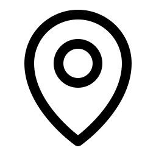
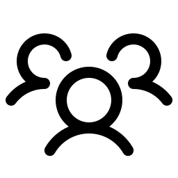
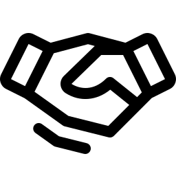
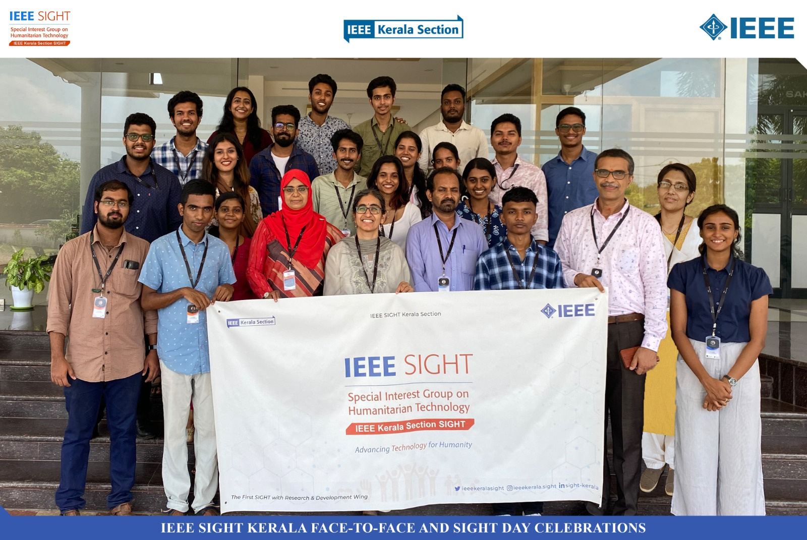
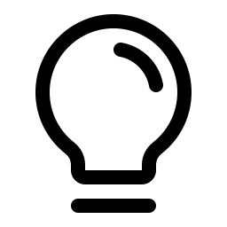

Understand before building.
Spend time with people. Learn what an everyday challenge looks like in their context, and what is already working.
IEEE KERALA SECTION SIGHT
We work with communities to make technology
useful, accessible and lasting.

ROOTED IN KERALA.
CONNECTED GLOBALLY.
01 — THE IDEA
IEEE SIGHT — Special Interest Group on Humanitarian Technology — connects volunteers with communities to apply technology to real needs.
Here in Kerala, students, engineers and local partners work together on water, energy, education and inclusion.
Our mission at IEEE SIGHT02 — OUR WORK
SELECTED WORK
 PROJECT PHOTOGRAPH
PROJECT PHOTOGRAPHD2Re-B · WAYANAD
Solar-powered water and filtration.
 ILLUSTRATION
ILLUSTRATIONLUMEN · MUVATTUPUZHA
Street lighting, shaped around local needs.
 ILLUSTRATION
ILLUSTRATIONSTEAM FOR SOCIAL GOOD
Design thinking meets sustainable development.
Selected historical projects. Open a story for its context and original IEEE source. Explore the project archive →
03 — COMMUNITY
There’s more than one way to contribute. Bring your technical skills, local knowledge or willingness to learn.
Meet the 2026 leadership team →
Students & volunteersPut your skills into practice.
Community partnersLocal knowledge makes the difference.
THE WAY WE WORK
Meaningful technology takes more than a prototype. It takes trust, shared decisions and care over time.
04 — RESOURCES
Explore guidance and the global SIGHT community.
Connect with a group or learn how to start one.

Explore grants, eligibility and official application pages.
GETTING STARTED
SIGHT membership is free and open to everyone interested in humanitarian technology. Non-IEEE members are welcome to participate in local SIGHT Groups. Read the official membership FAQ.
Connect with the Kerala team to discuss student participation or a community partnership. You can also find or start a SIGHT Group affiliated with an IEEE Section or Student Branch.
Yes. Start a conversation with the Kerala team about the challenge and local context. Please avoid sharing personal, medical or other sensitive details in an initial public message.
The original Problems, Solutions and Education Hub remains on the previous website. Its discussions and accounts have not been migrated here. Some older content may be outdated.
TAKE THE NEXT STEP
Be part of a community using technology for a more inclusive and resilient Kerala.
Contact SIGHT Kerala